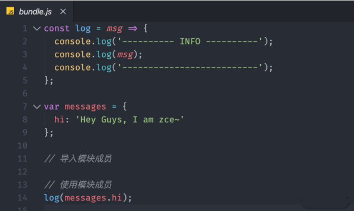
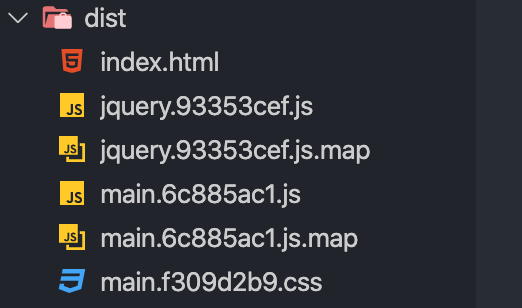
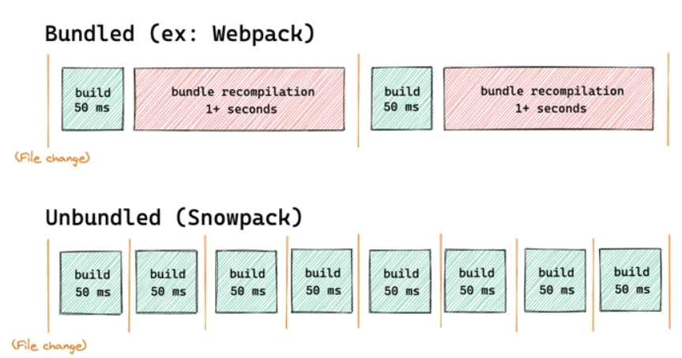
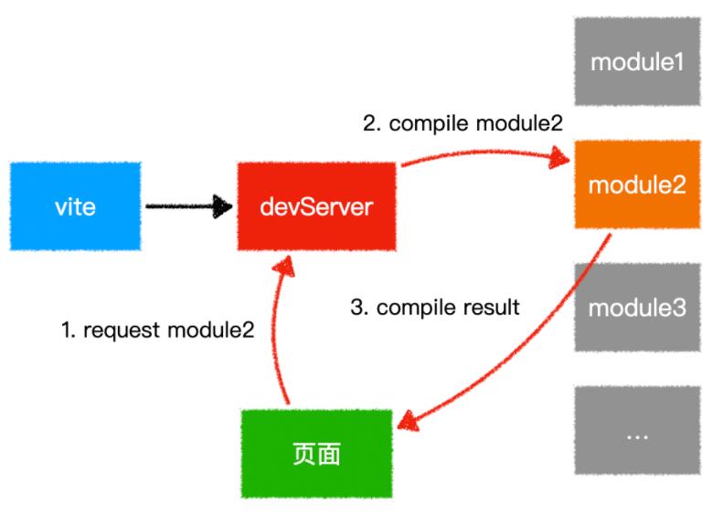

与webpack类似的工具还有哪些？区别？
参考答案
一、模块化工具
模块化是一种处理复杂系统分解为更好的可管理模块的方式
可以用来分割，组织和打包应用。每个模块完成一个特定的子功能，所有的模块按某种方法组装起来，成为一个整体(bundle)
在前端领域中，并非只有webpack这一款优秀的模块打包工具，还有其他类似的工具，例如Rollup、Parcel、snowpack，以及最近风头无两的Vite
通过这些模块打包工具，能够提高我们的开发效率，减少开发成本
这里没有提及gulp、grunt是因为它们只是定义为构建工具，不能类比
Rollup
Rollup 是一款 ES Modules 打包器，从作用上来看，Rollup 与 Webpack 非常类似。不过相比于 Webpack，Rollup 要小巧的多
现在很多我们熟知的库都都使用它进行打包，比如：Vue、React和three.js等
举个例子：
// ./src/messages.js
export default {
hi: 'Hey Guys, I am zce~'
}
// ./src/logger.js
export const log = msg => {
console.log('---------- INFO ----------')
console.log(msg)
console.log('--------------------------')
}
export const error = msg => {
console.error('---------- ERROR ----------')
console.error(msg)
console.error('---------------------------')
}
// ./src/index.js
import { log } from './logger'
import messages from './messages'
log(messages.hi)然后通过rollup进行打包
$ npx rollup ./src/index.js --file ./dist/bundle.js打包结果如下图

可以看到，代码非常简洁，完成不像webpack那样存在大量引导代码和模块函数
并且error方法由于没有被使用，输出的结果中并无error方法，可以看到，rollup默认开始Tree-shaking 优化输出结果
因此，可以看到Rollup的优点：
- 代码效率更简洁、效率更高
- 默认支持 Tree-shaking
但缺点也十分明显，加载其他类型的资源文件或者支持导入 CommonJS 模块，又或是编译 ES 新特性，这些额外的需求 Rollup 需要使用插件去完成
综合来看，rollup并不适合开发应用使用，因为需要使用第三方模块，而目前第三方模块大多数使用CommonJs方式导出成员，并且rollup不支持HMR，使开发效率降低
但是在用于打包 JavaScript 库时，rollup比 webpack 更有优势，因为其打包出来的代码更小、更快，其存在的缺点可以忽略
Parcel
Parcel ，是一款完全零配置的前端打包器，它提供了 “傻瓜式” 的使用体验，只需了解简单的命令，就能构建前端应用程序
Parcel 跟 Webpack 一样都支持以任意类型文件作为打包入口，但建议使用HTML文件作为入口，该HTML文件像平时一样正常编写代码、引用资源。如下所示：
<!-- ./src/index.html -->
<!DOCTYPE html>
<html lang="en">
<head>
<meta charset="UTF-8">
<title>Parcel Tutorials</title>
</head>
<body>
<script src="main.js"></script>
</body>
</html>main.js文件通过ES Moudle方法导入其他模块成员
// ./src/main.js
import { log } from './logger'
log('hello parcel')
// ./src/logger.js
export const log = msg => {
console.log('---------- INFO ----------')
console.log(msg)
}运行之后，使用命令打包
npx parcel src/index.html执行命令后，Parcel不仅打包了应用，同时也启动了一个开发服务器，跟webpack Dev Server一样
跟webpack类似，也支持模块热替换，但用法更简单
同时，Parcel有个十分好用的功能：支持自动安装依赖，像webpack开发阶段突然使用安装某个第三方依赖，必然会终止dev server然后安装再启动。而Parcel则免了这繁琐的工作流程
同时，Parcel能够零配置加载其他类型的资源文件，无须像webpack那样配置对应的loader
打包命令如下：
npx parcel src/index.html由于打包过程是多进程同时工作，构建速度会比Webpack 快，输出文件也会被压缩，并且样式代码也会被单独提取到单个文件中

可以感受到，Parcel 给开发者一种很大的自由度，只管去实现业务代码，其他事情用Parcel解决
Snowpack
Snowpack，是一种闪电般快速的前端构建工具，专为现代Web设计，较复杂的打包工具（如Webpack或Parcel）的替代方案，利用JavaScript的本机模块系统，避免不必要的工作并保持流畅的开发体验
开发阶段，每次保存单个文件时，Webpack和Parcel都需要重新构建和重新打包应用程序的整个bundle。而Snowpack为你的应用程序每个文件构建一次，就可以永久缓存，文件更改时，Snowpack会重新构建该单个文件
下图给出webpack与snowpack打包区别：

在重新构建每次变更时没有任何的时间浪费，只需要在浏览器中进行HMR更新
Vite
vite ，是一种新型前端构建工具，能够显著提升前端开发体验
它主要由两部分组成：
- 一个开发服务器，它基于 原生 ES 模块 提供了丰富的内建功能，如速度快到惊人的 [模块热更新HMR
- 一套构建指令，它使用 Rollup打包你的代码，并且它是预配置的，可以输出用于生产环境的优化过的静态资源
其作用类似webpack + webpack-dev-server，其特点如下：
- 快速的冷启动
- 即时的模块热更新
- 真正的按需编译
vite会直接启动开发服务器，不需要进行打包操作，也就意味着不需要分析模块的依赖、不需要编译，因此启动速度非常快
利用现代浏览器支持ES Module的特性，当浏览器请求某个模块的时候，再根据需要对模块的内容进行编译，这种方式大大缩短了编译时间
原理图如下所示：

在热模块HMR方面，当修改一个模块的时候，仅需让浏览器重新请求该模块即可，无须像webpack那样需要把该模块的相关依赖模块全部编译一次，效率更高
webpack
相比上述的模块化工具，webpack大而全，很多常用的功能做到开箱即用。有两大最核心的特点：一切皆模块和按需加载
与其他构建工具相比，有如下优势：
- 智能解析：对 CommonJS 、 AMD 、ES6 的语法做了兼容
- 万物模块：对 js、css、图片等资源文件都支持打包
- 开箱即用：HRM、Tree-shaking等功能
- 代码分割：可以将代码切割成不同的 chunk，实现按需加载，降低了初始化时间
- 插件系统，具有强大的 Plugin 接口，具有更好的灵活性和扩展性
- 易于调试：支持 SourceUrls 和 SourceMaps
- 快速运行：webpack 使用异步 IO 并具有多级缓存，这使得 webpack 很快且在增量编译上更加快
- 生态环境好：社区更丰富，出现的问题更容易解决
- Webpack：灵活性高，功能全面，适合大型应用和复杂需求，但配置可能较复杂。
- Rollup：专注于 ES6 模块和库打包，树摇效果好，配置简单。
- Parcel：零配置、快速启动，适合快速开发和原型设计。
- Vite：现代化的构建工具，提供极速启动和高效开发体验，适合现代前端项目。